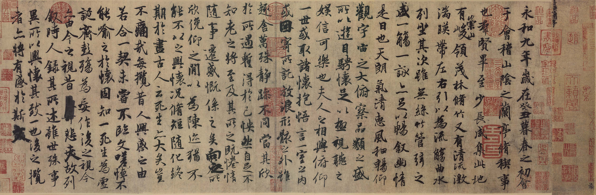

永和九年，岁在癸丑，暮春之初，会于会稽山阴之兰亭，修1稧2事也。群贤毕至，少长咸集。此地有崇山峻领3，茂林修竹；又有清流激湍，暎4带左右。引以为流觞曲水，列坐其次。虽无丝竹管弦之盛，一觞一咏，亦足以畅叙幽情。
是日也，天朗气清，惠风和畅。仰观宇宙之大，俯察品类之盛。所以游目骋怀，足以极视听之娱，信可乐也。
夫人之相与，俯仰一世，或取诸怀抱，悟言一室之内；或因寄所托，放浪形骸之外。虽趣舍万殊，静躁不同，当其欣于所遇，暂得于己，怏然5自足，不知老之将至。及其所之既倦，情随事迁，感慨系之矣。向之所欣，俛6仰之间，以7为陈迹，犹不能不以之兴怀；况修短随化，终期于尽。古人云：“死生亦大矣。”岂不痛哉！
每揽8昔人兴感之由，若合一契，未尝不临文嗟悼，不能喻之于怀。固知一死生为虚诞，齐彭殇为妄作。后之视今，亦由9今之视昔，悲夫！故列叙时人，录其所述，虽世殊事异，所以兴怀，其致一也。后之揽10者，亦将有感于斯文。
永和九年，嵗在癸丑，暮春之初，會於會稽山隂之蘭亭，脩1稧2事也。羣賢畢至，少長咸集。此地有崇山峻領3，茂林脩竹；又有清流激湍，暎4帶左右。引以為流觴曲水，列坐其次。雖無絲竹管弦之盛，一觴一詠，亦足以暢敘幽情。
是日也，天朗氣清，恵風和暢；仰觀宇宙之大，俯察品類之盛。所以遊目騁懐，足以極視聽之娛，信可樂也。
夫人之相與，俯仰一世，或取諸懐抱，悟言一室之內，或因寄所託，放浪形骸之外。雖趣舎萬殊，靜躁不同，當其欣扵所遇，暫得扵己，怏然5自足，不知老之將至。及其所之既惓，情隨事遷，感慨係之矣。向之所欣，俛6仰之閒以7為陳跡，猶不能不以之興懐；況脩短隨化，終期扵盡。古人云：「死生亦大矣。」豈不痛哉！
每攬8昔人興感之由，若合一契，未嘗不臨文嗟悼，不能喻之扵懐。固知一死生為虛誕，齊彭殤為妄作。後之視今，亦由9今之視昔，悲夫！故列敘時人，錄其所述，雖世殊事異，所以興懐，其致一也。後之攬10者，亦將有感扵斯文。
来源: